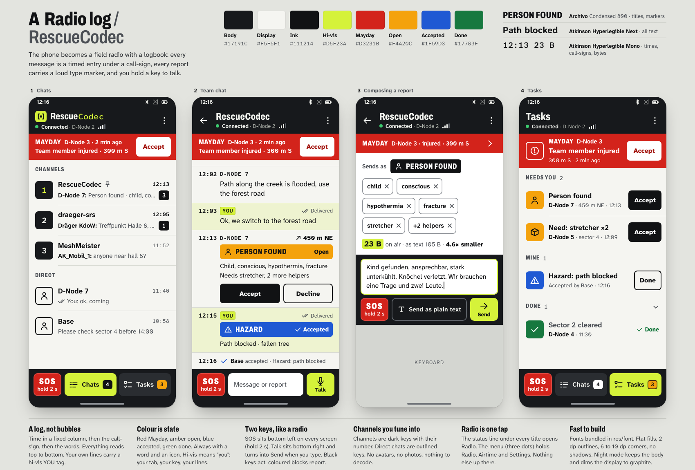
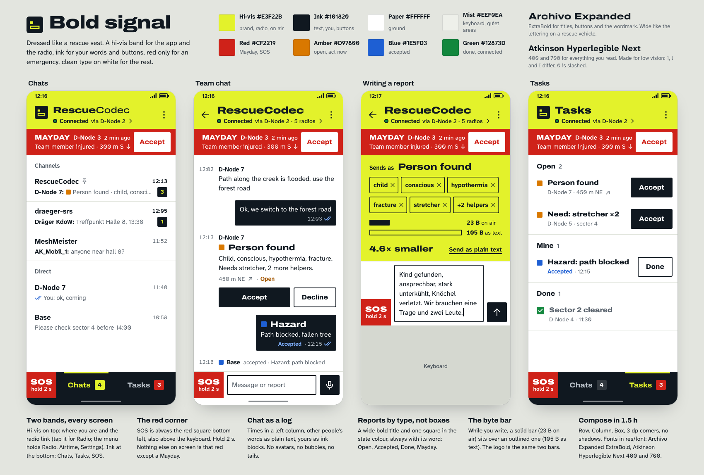
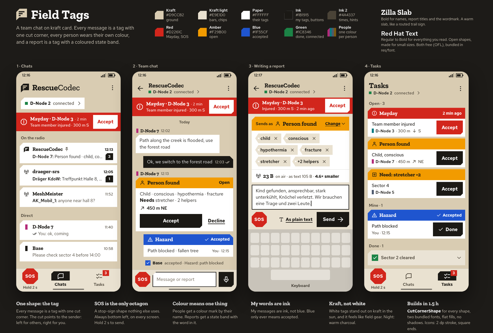

Same four screens and the same content in each (Chats, Team chat, writing a report, Tasks), so you compare style only. Pick one, or mix ("A's chat with C's colours"). Click a picture to open its full page.
The phone as a field radio with a logbook. Messages are timed log entries (time column, call sign), reports are loud full-width type blocks. Two radio keys at the bottom on every screen: SOS left, Talk/Send right. Hi-vis only means "you".

Dressed like a rescue vest: a hi-vis band on top, an ink bar at the bottom with a fixed red SOS corner. The chat reads like a log, your words as ink blocks. The byte bar (23 B against 105 B) is also the logo.

A real team chat on kraft card, like field gear. Every message is a tag with one cut corner pointing to the sender, each person has a colour mark, reports are tags with a coloured state band. SOS is a red octagon (a stop sign), always bottom left.
